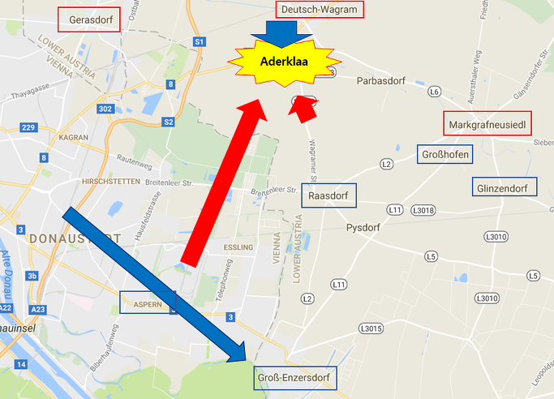
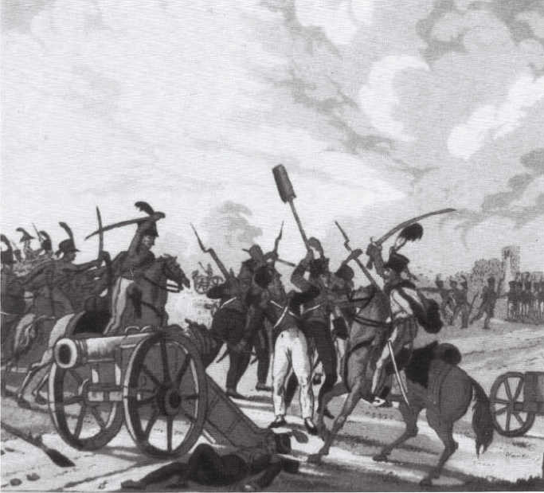
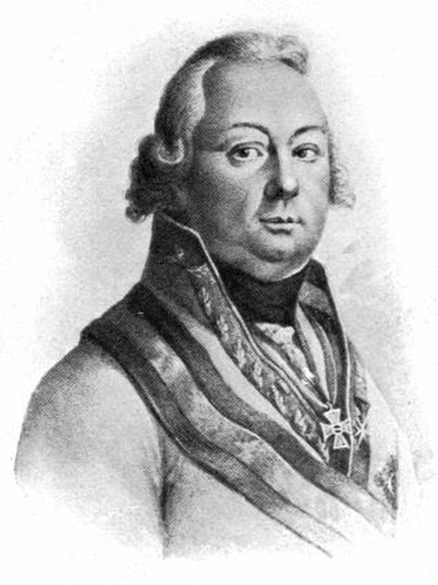

바그람 전투 (제9편) - 위기일발
게시: 2017-08-06T16:56:57+09:00
전날 밤 카알 대공도 나폴레옹과 생각하는 것이 거의 비슷했습니다. 좌익과 중앙에서 잽을 날리며 적의 시선을 끈 뒤, 강력한 우익의 우회 진격을 통해 적의 측면을 관통하여 끝장을 본다는 것이었지요. 차이는 바로 시간이었습니다. 공격자였던 나폴레옹은 방어자 입장인 오스트리아 측이 먼저 선제 공격을 해오리라고는 생각하지 못하는 사이, 카알 대공이 한두 시간 먼저 공격을 해들어온 것 뿐이었습니다. 여기에 문제를 심각하게 만든 것이 베르나도트의 아더클라 무단 이탈과 마세나가 지휘하는 제4 군단의 아더클라 쪽으로의 이동이었습니다.

(카알 대공이 준비한 회심의 라이트 훅, 클레나우의 진격 방향이 파란색 화살표로 남서쪽으로 향하고 있는 그림입니다. 그와 직각을 이루며 북쪽으로 올라가는 붉은색 화살표가 프랑스군 마세나의 제4 군단입니다.)
오스트리아군의 우익을 이루고 있던 것은 전날 낮에 프랑스군 앞에서 후퇴하느라 고생이 많았던 클레나우(Klenau)의 제6 군단과 콜로브라트(Kollowrat)의 제3 군단이었습니다. 이들은 비삼베르크(Bisamberg)로 이어지는 고지대에 주둔하고 있었는데, 그 때문에 카알 대공의 새벽 작전에 대한 지시를 너무 늦게 통보받았습니다. 그로 인해 그들의 출격은 카알 대공이 의도한 것보다 무려 3시간이나 늦게 시작되어, 공격 시작점에 도착한 것은 거의 아침 8시가 되어서였습니다. 그러나 이렇게 늦어진 것이 훨씬 더 좋은 결과를 낳아버렸습니다. 이때 즈음 마세나의 주력 사단들은 모두 아더클라 방면으로 몰려간 뒤였던 것입니다. 특히 르그랑(Legrand)의 사단은 아더클라로의 행군 도중 측면에서 들이닥친 콜로브라트의 오스트리아군 제3 군단의 습격을 받고 대경실색 했습니다.
하지만 르그랑의 사단보다 더 큰일이 난 것은 마세나가 아스페른과 에슬링의 두 마을을 지키라고 남겨두고 간 부데(Boudet)의 사단이었습니다. 마세나는 '뭐 어차피 이쪽은 별 일이 없을테니까'라며 태평하게 달랑 부데의 1개 사단만 남겨두고 갔고, 어쩌면 그렇게 뒤에 남겨진 부데와 그의 부하들은 속으로 은근히 기뻐했을지도 몰랐겠습니다. 부데 사단은 약 한달 전의 에슬링 전투에서 에슬링의 곡물 창고를 지키며 그야말로 혈전을 벌여 많은 희생자를 낸 바 있었고, 그 수도 고작 5천명 정도로 매우 허약해진 상태였습니다. 이번 전투에서는 아마 한숨 돌리고 싶었을 것 같기도 합니다. 그러나 운명은 얄궃게도, 부데의 사단을 다시 그 곡물 창고로 쳐박아 넣게 됩니다.
아스페른으로 진격을 개시한 클레나우의 제6 군단 약 1만4천은 그야말로 거칠 것이 없이 나아갔습니다. 오스트리아군이 포병대를 전개시켜 포격을 가하자 부데도 10문의 포병대를 동원하여 반격을 하려 했으나, 기다렸다는 듯이 오스트리아 경기병대가 바람처럼 달려나와 프랑스 포병들을 베어넘기고 대포들을 나포했습니다. 이대로 대포들을 잃을 수 없었던 프랑스 보병들이 우르르 물려나와 오스트리아 기병들을 쫓아내고 이 대포들을 다시 탈환했지만, 그 사이에 방열을 마친 오스트리아 포병대가 우왕좌왕하는 프랑스군에게 포격을 가해 다시 프랑스군의 대포들을 빼앗을 수 있었습니다. 이렇게 고전으로 시작된 부데의 방어전은 결국 잘 풀리지 않았습니다. 대포들을 잃고 버티기가 어려웠던 부데는 결국 아스페른을 포기하고 정들었던(?) 에슬링으로 후퇴해야 했습니다. 하지만 에슬링으로 물러난다고 해서 뭐 딱히 사정이 더 좋아질 것도 없었습니다. 오스트리아군은 허둥지둥 도망치는 프랑스군의 뒤를 아주 이 순간을 기다렸다는 듯이 집요하게 추격해왔고, 에슬링에서 오스트리아군을 막아내려 애쓰던 부데는 결국 오전 10시 경, 거기서도 밀려나야 했습니다.

(부데 사단에 딸린 프랑스군 포병대를 유린하는 오스트리아 기병대의 모습입니다.)
도나우 강변을 따라 후퇴하는 부데의 사단이 밀려난 곳은 그로스-엔저스도르프(Gross-Enzersdorf)였습니다. 여기 다음은 어제 새벽 프랑스군이 대거 도나우강을 건넌 교두보였습니다. 즉, 여기에서마저 밀려나면 이제 16만 프랑스군은 퇴로가 끊기는 것이었습니다. 오스트리아군이 대포를 방열하고 로바우섬으로부터 보급품을 나르고 있던 종군 민간 상인들을 향해 포격을 가하자 일대 혼란이 벌어졌으나, 그러나 병력도 화력도 미약했던 부데 사단은 뭘 해볼 방법이 없었습니다. 그렇게 어쩔 줄 모르고 전전긍긍하던 부데 사단을 향해 마침내 클레나우의 오스트리아군이 진격을 시작했습니다. 이때가 바그람 전투 내내 프랑스군에게 가장 위험한 순간이었습니다. 북쪽 아더클라에서는 전선 중앙을 돌파당한데다, 남쪽 그로스-엔저스도르프의 교두보가 함락되기 일보 직전이었던 것입니다.
그러나 구원은 뜻 밖의 방향으로부터 왔습니다. 도나우 강변을 따라 보무도 당당하게 행군해 들어오던 오스트리아군을 향해 로바우 섬으로부터 불벼락이 날아온 것입니다. 아스페른-에슬링 전투에서 쓰라린 패배를 겪은 이후 약 1달 넘게 나폴레옹은 다음 전투에서 승리하기 위해 만반의 준비를 했었지요. 그 준비 중 하나가 로바우 섬 전체의 요새화였습니다. 덕분에 로바우 섬에는 약 124문의 각종 대포 및 박격포가 설치되어 있었는데, 이는 강력한 1급 전함 1척이 강변에 닻을 내린 것 같은 효과였습니다. 아니, 전함은 양측에 포를 나눠 설치해야 했으므로 그에 비해 모든 포를 북쪽 강변으로 향해 놓을 수 있었던 로바우 섬은 1급 전함 2척이 나란히 강변에 정박한 것이나 마찬가지였습니다. 그 막강한 화력의 포병대가 일제히 오스트리아군을 강타했습니다. 아무리 당시의 대포가 조잡한 화력만을 낼 수 있다고 해도, 탁 트인 강변에 아주 먹음직스러운 밀집 대형으로 행군하는 보병대에게 날아든 무지막지한 대포알들은 끔찍한 살육을 일으켰습니다. 로바우 섬의 포병대는 신나게 대포알을 날려보냈고, 클레나우의 오스트리아군은 공포에 질려 후퇴해야 했습니다.
이렇게 밀려난 클레나우는 일단 숨을 돌리고 다음 행동을 결정해야 했습니다. 아무리 로바우 섬의 프랑스 포병대가 막강하다고 하더라도, 재빨리 진격하여 몇 천 밖에 안 되는 프랑스 보병들을 밀어낸다면 최소한 프랑스군의 소중한 다리들을 파괴할 수 있었습니다. 또는 방향을 이제 북쪽으로 틀어 프랑스군의 노출된 후방을 타격하는 것도 괜찮은 생각이었습니다. 그러나 클레나우는 두가지 방안 모두 택하지 않고, 일단 여기서 멈추기로 결정합니다. 왜 이렇게 오스트리아군은 자꾸 결정적인 순간에 멈추는 것이었을까요 ?
클레나우가 멈추기로 결정한 것은 전통적인 오스트리아군의 경직성에 비추어볼 때 그다지 놀라운 일은 아니었습니다. 일단, 카알 대공은 물론이고 클레나우 본인도 이렇게 쉽게 프랑스군 교두보까지 일사천리로 돌파해 들어올 수 있을 것이라고는 생각하지 못했습니다. 그러다보니 실제로 그런 일이 일어났을 때 이기고 있는 편이 약간 당황한 것도 이해는 할 수 있는 일이었습니다. 게다가, 아무리 운좋게 적의 중앙부 뒤쪽까지 잘 뚫고 왔다고 해도, 클레나우의 제6 군단은 고작 1만4천의 병력 뿐이었습니다. 10만 단위의 대군이 밀집한 적진 한 가운데에 막상 뛰어들고나니, 불안한 것은 당연했습니다. 그렇게 불안해할 거라면 애초에 왜 달랑 1개 군단을 적진 뒤쪽으로 찔러 넣었느냐고요 ? 그러지 않았습니다. 카알 대공은 분명히 클레나우와 콜로브라트의 2개 군단을 찔러 넣었거든요. 클레나우도 바로 콜로브라트의 제3 군단의 위치가 파악될 때까지 기다리기로 한 것입니다. 그런데 콜로브라트의 제3 군단은 어디에 간 것일까요 ?
클레나우보다 좀더 북쪽에서 진격을 시작했던 콜로브라트는 저 위에서 언급한 것처럼 아더클라를 향해 북진하던 르그랑의 프랑스 사단과 딱 마주쳤습니다. 군단 대 사단의 만남인데다 공격 준비를 갖춘 오스트리아군에 비해 프랑스군은 행군 중에 생각하지 않은 내습을 당한 셈이어서 상황은 오스트리아군에게 크게 유리했습니다. 그런데도 불구하고 콜로브라트의 행동은 복장이 터질 정도로 굼뜨고 느린데다 소극적이었습니다. 그는 본인의 임무가 프랑스군 후방으로의 기습 침투라는 것을 이해한 건지 못한 건지 헷갈릴 정도의 행동을 보여줬습니다. 일단 원래의 진지인 비삼베르크 언덕에 1개 여단을 뚝 떼어놓고 출발했습니다. 그럼에도 당시 상황은 그가 마음만 먹는다면 르그랑 사단을 가볍게 밀어내고 로바우 섬이건 마세나의 뒤통수이건 심지어 나폴레옹의 사령부가 있는 라스도르프(Raasdorf)까지도 별 저항 없이 달려갈 수 있을 정도로 그의 전면은 탁 트인 상태였습니다. 그러나 르그랑 사단과 마주치자 콜로브라트가 첫번째로 내린 명령은 공격 명령이 아니라 후방 퇴로 확보였습니다. 그나마 빈약한 르그랑 사단에게조차 과감한 공격을 가하지 않고 먼저 포병대를 내세워 대포알만 날려보내는 소극적인 지휘로 초지일관 했습니다.

(이 분이 콜로브라트 백작 Johann Karl, Graf von Kolowrat-Krakowsky 이십니다. 이분은 오스트리아의 주요 패전인 호헨린덴 전투와 아우스테를리츠 전투 등에서 모두 혁혁한 공(?)을 세운 바 있었습니다. 아마 나폴레옹은 그의 빛나는 승리가 100% 자신의 천재성에 기인한 것이라고는 말 못 했을 것입니다. 그 정도로 이 분의 무능함은 빛났는데, 그럼에도 이 분이 연달아 주요 군단의 지휘권을 거머쥐었다는 것이 오스트리아가 용감하고 충성스러운 병사들에도 불구하고 왜 매번 패전했는지를 보여줍니다. 이 양반이 혁혁한(?) 활약을 한 바그람 전투 직후, 이 60이 넘은 노장은 무려 원수(Feldmarschall)로 승진합니다.)
아무리 카알 대공이 작전이 훌륭하다고 해도 무엇하겠습니까 ? 그의 작전을 수행할 장군들은 여전히 낡은 교리에 묶인, 귀한 집 자식으로 태어났다는 것 외에는 별볼일 없던 무능한 귀족들이었습니다. 그런 무능한 귀족들이 핵심 지휘권을 장악하고 있었다는 것이 바로 오스트리아의 패인이라고 할 수 있었습니다. 이런 식으로 오스트리아군은 운 좋게 손에 들어온 승리의 기회를 날려 먹고 말았습니다.
Source : The Reign of Napoleon Bonaparte by Robert Asprey
With Napoleon's Guns by Jean-Nicolas-Auguste Noel
http://www.historyofwar.org/articles/battles_wagram.html
https://en.wikipedia.org/wiki/Battle_of_Wagram
http://www.napolun.com/mirror/napoleonistyka.atspace.com/Battle_of_Wagram_1809.htm#battleofwagram94